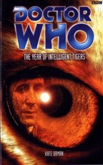

|
The Year of Intelligent Tigers
|
BASIC PLOT DOCTOR COMPANIONS MATERIALISATION CIRCUIT PREPARATORY READING CONTINUITY REFERENCES Pg 6 "Did it make sense to say you were from the year 2001, as though it were a place? Wasn't she really from 1973, the year of her birth?" Likely reference to the debates over Sarah claiming to be from 1980 in Pyramids of Mars. Pg 16 "Running around trying not to get shot or turned into slime" This might be a reference to Coldheart. Pg 17 "Besma was originally from Gidi" One of the worlds Tryst travelled to in Nightmare of Eden. Pg 18 "I hear that everyone's bi in this time period." A similar line appeared in All-Consuming Fire, where Benny said that most people were bisexual in her time. On the other hand, this occurs four centuries before Benny's time. Pg 21 "The Doctor would plead amnesia, some unknown trauma that slammed the door on his earlier life." Reference to the Earth arc. "'Where have you come from?' Karl whispered. The Doctor shook his head. 'I dropped from the sky one morning.'" This is exactly what he does in Fallen Gods. Pg 27 "I tried living in a straight line for a hundred years." Another reference to the Earth arc. Pg 37 "It was more like that time in sixty-seven when he and Maddy had listened to the B-side of the new Beatles single over and over again all night." Revolution Man. Pg 38 "The jukebox played a soothing mixture of scratchy old jazz redords and Youkalian ambient." Youkali appeared in Return of the Living Dad. "Well, all right, Fitz had seen Hendrix only a few times in sixty-seven, but they'd been great seats." Revolution Man again. Pg 42 The bridge takes place during the Earth arc, between Casualties of War and The Turing Test. Pg 44 "A ragged clipping about a cloud of wasps attacking a train outside Arandale." This is a very clever reference to events from Eater of Wasps. Pg 69 "The big ships had to land, he realised, rather than send down shuttles or use T-mat" The Seeds of Death. Pg 71 "The tiger stared at him blankly, as though the telepathic trick of language translation had failed." First mentioned in Masque of Mandragora. Pg 92 "These shoes fit appallingly" Inverting a famous line from the TV Movie. Pg 94 "'I hope I never remember!' he shouted into the teeth of the storm. 'That'll show them all!'" Reference to the Earth arc and surprisingly prescient considering The Gallifrey Chronicles. This scene, of the Doctor playing the violin at the heart of a storm, was foreseen in Father Time. Pg 126 "You know, I sent off a recording of the Stela to the languages department at Lvan College, but they never got back to me about it." Lvan is one of the worlds Tryst visits in The Nightmare of Eden. Pg 140 "A blonde girl in her teens" The Doctor carries a picture of Miranda in his wallet (Father Time). Pg 143 "On Telemahuka we gave a rock concert in the science compound to break the Caxtarids' mind control." The Caxtarids have appeared in previous Kate Orman novels, especially Return of the Living Dad and The Room With No Doors. Pg 146 "I'm Fitz Fortune, and these are the Fortunes of War." Fitz used this stage name in EarthWorld. Pg 147 Reference to Sam. Pg 148 "I've come a long way from the garden centre in West Wycombe." The Taint. Pg 196 Anji dreams of Dave. Pg 197 "Darren, her bear of a boss, stood in a field." Darren was mention in Escape Velocity (pg 231). "There's life in the Vortex itself, hungry, mathematical life." The Enemy are one such life (The Ancestor Cell) but we see many more types in Pg 212 The second bridge occurs in 1962, also during the Earth arc, between Endgame and Father Time.
Pg 214 "He plays at a safe distance from the temple, supposedly not to disturb the others." In Fear Itself (pg 68), we discover the Doctor's violin playing in Florence disturbed the monks, so presumably he's trying not to repeat this mistake.
Pg 220 "I'll burn that bridge when I come to it" This is a paraphrasing of a quote from Logopolis.
Pg 228 "Imagine an alien who fell into an ugly prison on Earth, full of torturers." This is exactly what happens to the Doctor in Interference.
Pg 230 "The Doctor took an odd-looking tool out of his pocket" Probably the sonic screwdriver.
Pg 273 "You must help yourselves." The fourth Doctor also says this, in The Seeds of Doom.
OLD FRIENDS AND OLD ENEMIES NEW FRIENDS AND NEW ENEMIES Big, leader of the tigers.
CONTINUITY COCK-UPS PLUGGING THE HOLES [Fan-wank theorizing of how to fix continuity cock-ups] FEATURED ALIEN RACES Pg 2 A knee-high amoeba.
FEATURED LOCATIONS Pg 42 Aboard the Sarah Gail, 1935 (in flashback).
Pg 212 Thailand (formerly Siam), 1962 (in flashback).
IN SUMMARY - Robert Smith? |
|
 |